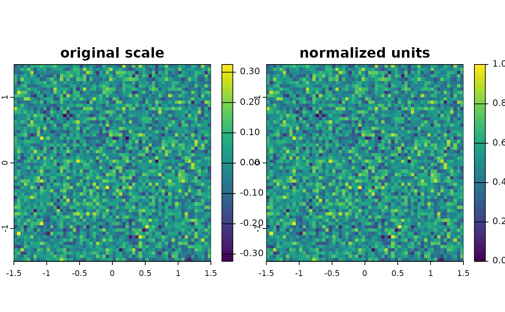

Spatial adjustment of environmental predictors and raster stacks
Source:R/utils-predictors.R
predictor_transform.RdThis function allows the transformation of provided environmental
predictors (in SpatRaster format). A common use case is for instance the
standardization (or scaling) of all predictors prior to model fitting. This
function works both with SpatRaster as well as with stars objects.
Usage
predictor_transform(
env,
option,
windsor_props = c(0.05, 0.95),
pca.var = 0.8,
state = NULL,
method = NULL,
...
)Arguments
- env
A
SpatRasterorstarsobject.- option
A
vectorstating whether predictors should be preprocessed in any way (Options:'none','scale','norm','windsor','windsor_thresh','percentile''pca','revjack'). See Details.- windsor_props
A
numericvector specifying the proportions to be clipped for windsorization (Default:c(.05,.95)).- pca.var
A
numericvalue between>0and1stating the minimum amount of variance to be covered (Default:0.8).- state
A
matrixwith one value per variable (column) providing either a (stats::mean(),stats::sd()) for each variable inenvfor option'scale'or a range of minimum and maximum values for option'norm'. Effectively applies their value range for rescaling. (Default:NULL).- method
As
'option'for more intuitive method setting. Can be left empty (in this case option has to be set).- ...
other options (Non specified).
Value
Returns a adjusted SpatRaster object of identical resolution.
Details
Available options are:
'none'The original layer(s) are returned.'scale'This run thescale()function with default settings (1 Standard deviation) across all predictors. A sensible default to for most model fitting.'norm'This normalizes all predictors to a range from0-1.'windsor'This applies a 'windsorization' to an existing raster layer by setting the lowest, respectively largest values to the value at a certain percentage level (e.g. 95%). Those can be set via the parameter"windsor_props".'windsor_thresh'Same as option 'windsor', however in this case values are clamped to a thresholds rather than certain percentages calculated on the data.'percentile'This converts and bins all values into percentiles, e.g. the top 10% or lowest 10% of values and so on.'pca'This option runs a principal component decomposition of all predictors (viaprcomp()). It returns new predictors resembling all components in order of the most important ones. Can be useful to reduce collinearity, however note that this changes all predictor names to 'PCX', where X is the number of the component. The parameter'pca.var'can be modified to specify the minimum variance to be covered by the axes.'revjack'Removes outliers from the supplied stack via a reverse jackknife procedure. Identified outliers are by default set toNA.
Note
If future covariates are rescaled or normalized, it is highly recommended to use the statistical moments on which the models were trained for any variable transformations, also to ensure that variable ranges are consistent among relative values.
Examples
# Dummy raster
r_ori <- terra::rast(nrows = 10, ncols = 10, res = 0.05, xmin = -1.5, xmax = 1.5, ymin = -1.5, ymax = 1.5, vals = rnorm(3600,mean = .01,sd = .1))
# Normalize
r_norm <- predictor_transform(r_ori, option = 'norm')
new <- c(r_ori, r_norm)
names(new) <- c("original scale", "normalized units")
terra::plot(new)
